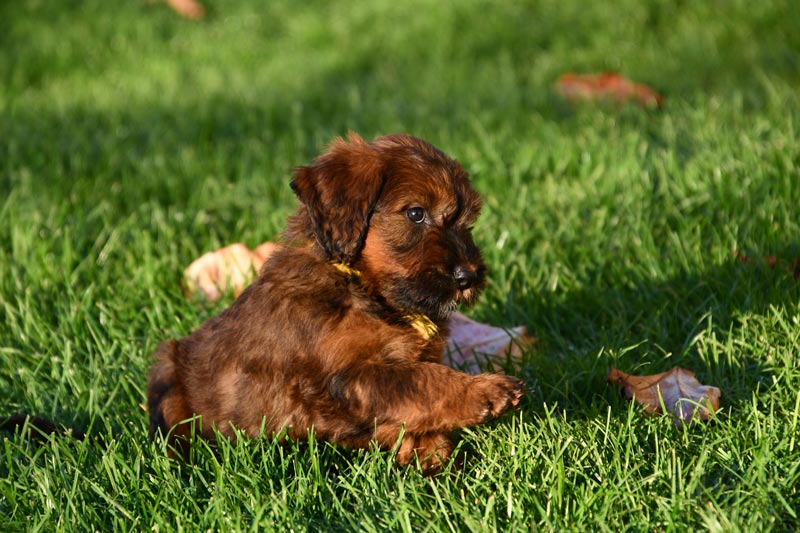

Nos portées
Portée à venir fin 2023.
Plus d'infos prochainement.
Nos femelles
Notre passion pour les briards rayonne au-delà des simples mots. Ces briardes représentent le coeur battant de notre élevage.


Crédit Photo : Francois Nicaise©
Nos Champions
De nombreux titres de champions nationaux, internationaux et sélections sont venus récompenser la qualité de nos chiens , depuis 1983.